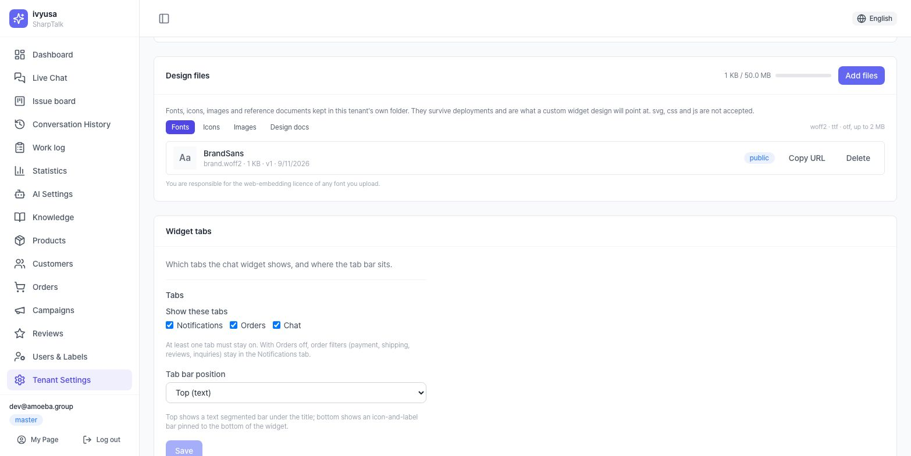
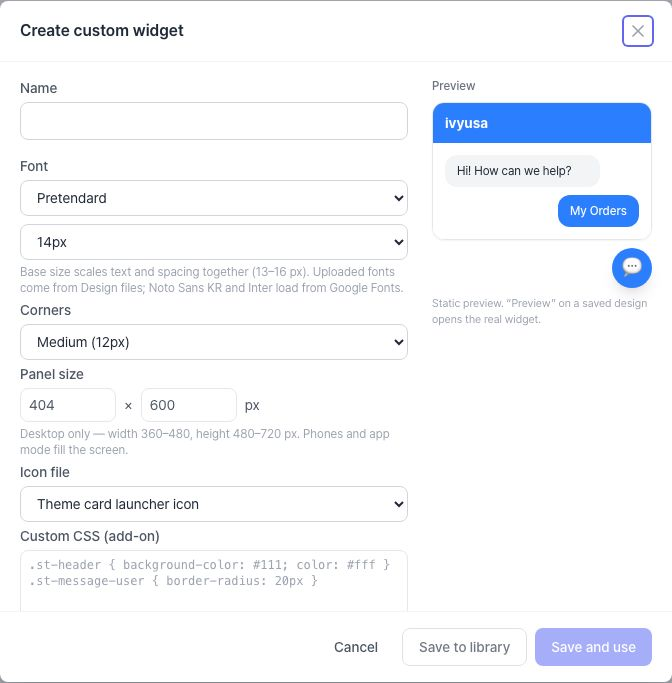
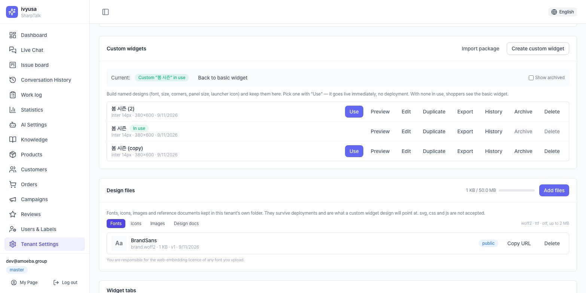
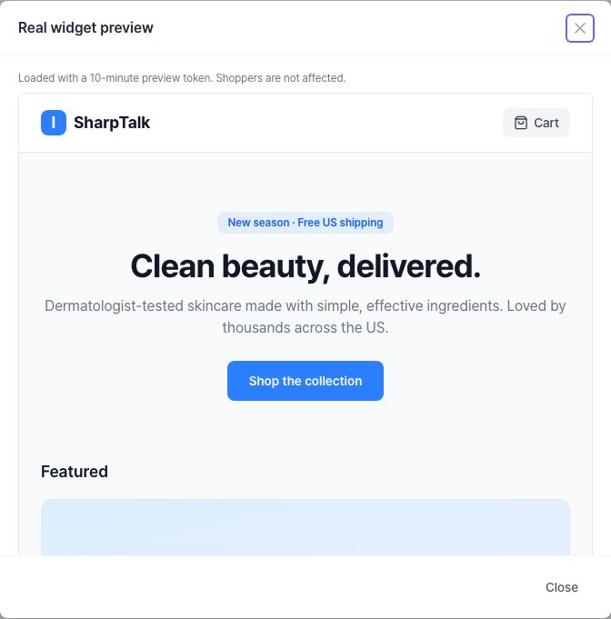
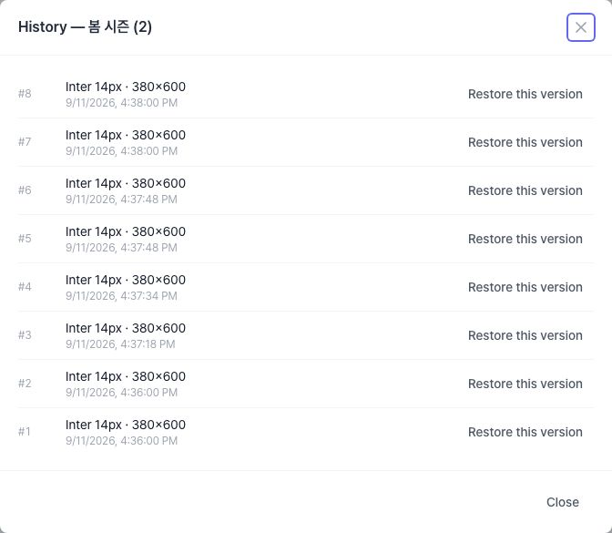
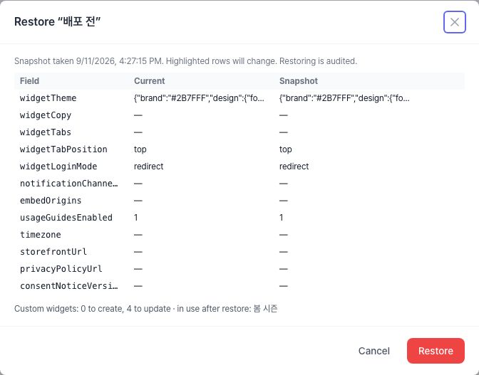
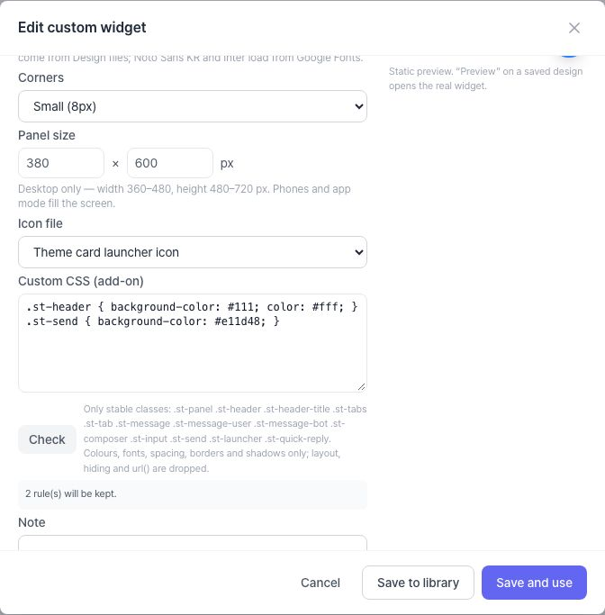
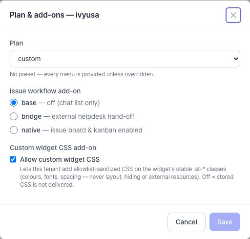

Basic widget vs custom widget
The look of the chat widget on your storefront is decided in two layers.
Widget theme card (basic widget) ── always applied
brand colour · header style · logo · launcher position/size/icon
│
▼ a custom widget that is [Use]d is layered on top
Custom widget (design library) ── applied only while in use
font · text size · corners · panel size · icon file · (add-on) sanitized CSS| Term | Meaning |
|---|---|
| Basic widget | The widget drawn from the widget theme card alone. When no custom widget is in use, this is what shoppers see |
| Custom widget | A named, saved design set (font, size, corners, panel, icon, CSS). Keep several and switch exactly one on with [Use] |
| Library | The list in the Custom widgets card, with In use / Archived states and the row actions (Preview · Edit · Duplicate · Export · History · Archive · Delete) |
| Design files | Fonts, icons, images and design docs a custom widget points at. Kept in this tenant's own folder, untouched by deployments |
| Use | The button that puts one library design in front of shoppers. It goes live immediately, with no deployment |
When you need a custom widget
- You want your brand font in the widget too (the theme card only changes colours)
- You prepare a different look per season or campaign and swap it in on the day
- You want a bigger or smaller desktop panel, or rounder corners
- You want your own artwork on the launcher button
If colours, logo and launcher position are all you need, the widget theme card alone is enough.
A custom widget overlays the theme card, it does not replace it. To change the brand colour, edit the theme card, not the custom widget — whichever design is in use picks it up immediately.
Prepare — design files
To use an uploaded font or an icon file in a custom widget, upload it to the Design files card first. If preset fonts and the theme card's launcher icon are enough, skip this chapter.

1.1 Rules per kind
| Kind | Formats | Limits | Visibility | Used by |
|---|---|---|---|---|
| Fonts | woff2 · ttf · otf | 2MB | public (the widget downloads it directly) | the editor's "Uploaded font" |
| Icons | png · webp | 256KB · 512×512px | public | the editor's "Icon file" (launcher button) |
| Images | png · jpg · webp | 2MB · 2000px | public | sharing mock-ups, Copy URL (the widget does not use them by itself) |
| Design docs | pdf · png · jpg | 10MB | private (signed URL) | storing mock-ups and brand guides |
- The whole design area is capped at 50MB (usage bar at the top right of the card). When it is full, uploads are refused (E5084).
- svg, css and js are not accepted. Files are checked by content, so renaming the extension does not get through (E5081).
- Icons and images are re-encoded on the server. Anything over the pixel limit is refused (E5083).
1.2 Upload procedure
- Settings > Widget settings > Design files card: pick the kind tab (Fonts / Icons / Images / Design docs).
- [Add files] → choose the file. The list shows the file name as its label.
- A new row means it is done. To replace a file, upload the new one, select it in the editor, then delete the old one (uploading the same name adds a new row rather than overwriting).
- Public files have [Copy URL] (for using the same font elsewhere on your site). Design docs only offer [Download].
serving an uploaded font to shoppers' browsers is the tenant's responsibility. Upload only fonts licensed for web embedding.
woff2 is the smallest and fastest. ttf/otf work but easily hit the 2MB cap and slow the first load. For CJK fonts, use a subset woff2.
Build — the custom widget editor

Settings > Widget settings > Custom widgets card → [Create custom widget].
2.1 Fields
| Field | Values | Notes |
|---|---|---|
| Name | up to 64 characters, unique within the tenant | Shown in the library. A duplicate name is refused (E5087) |
| Font | Pretendard (default) · Noto Sans KR · Inter · System font · Uploaded font | Noto Sans KR and Inter load from Google Fonts. Choosing "Uploaded font" reveals a Font file selector (Ch. 1) |
| Base size | 13–16px (default 14) | Scales text and spacing together, like zooming the whole widget |
| Corners | Small 8px · Medium 12px · Large 16px | Panel corner radius; bubbles and buttons follow proportionally |
| Panel size | width 360–480 · height 480–720 (default 404×600) | Desktop only. Mobile and app mode fill the screen |
| Icon file | the theme card's launcher icon (default) · an uploaded icon | Artwork on the round launcher button. An uploaded icon overrides the theme card's icon choice |
| Custom CSS (add-on) | sanitized CSS | Visible only for tenants whose platform admin enabled the add-on (Ch. 5) |
| Note | free text | Operational notes such as "Spring 2026, owner ○○". Never shown to shoppers |
The quick preview on the right shows font, size and corners roughly. Check the real widget with [Preview] after saving (Ch. 3).
2.2 Two ways to save
| Button | Result |
|---|---|
| [Save to library] | Only stores the design. Shoppers' widget is unchanged. Use it when you want to preview first |
| [Save and use] | Stores the design and puts it live at once. Whatever was in use is switched off automatically |
For a first design go [Save to library] → [Preview] → [Use]. The editor's quick preview does not reflect brand colour, logo or tab layout, so only the real widget shows the whole impression.
Raising the base size to 16px makes the panel feel cramped. Widen the panel together with it (e.g. 15px + 440×640).
Check & apply — Preview → Use

3.1 Real widget preview
[Preview] on a row opens the real widget with that design on top of a demo store page.
- It loads with a 10-minute preview token. Shoppers are unaffected; when the token expires, press [Preview] again.
- Preview needs a store domain (Settings > Basic settings > Storefront). Without one you get a notice instead.
- Sending chat messages inside the preview creates real demo sessions — use it for checking copy only.

3.2 Use · Back to basic widget
| Action | Result |
|---|---|
| [Use] on a row | That design goes live. The "Current:" line at the top of the card reads Custom "name" in use and the row gets an In use badge |
| [Back to basic widget] | Switches the custom design off. Shoppers see the basic widget drawn from the theme card alone. The design stays in the library |
Applying is immediate, with no deployment. The server rewrites the tenant's "live file" and shoppers' widgets read it on their next load.
- A shopper opening a new page: new design right away
- A shopper who already has the widget open: new design after a page refresh
- The widget paints its cached theme first and then refreshes from the live file, so the old look may flash very briefly
3.3 Editing the design in use
[Edit] on a design with the In use badge warns on save: "This design is in use — saving applies it to shoppers immediately."
do not edit the live design directly. Go [Duplicate] → edit the copy → [Preview] → [Use]. If anything goes wrong the previous design is still in the library and one click brings it back. If you must patch it in place, do so, and use [History] to restore a previous version if needed (§4.1).
Operate — undo & transfer
There are three ways to "undo" a design, each with a different scope.
| Tool | Scope | Unit of undo | Move to another tenant or environment |
|---|---|---|---|
| History (4.1) | one design | a save (revision) | no |
| Package (4.3) | one design + bundled fonts/icons | a file | yes (JSON export → import) |
| Settings snapshot (4.4) | 12 settings fields (theme, copy, tabs…) + the whole custom widget library | a snapshot | download only; restore works within the same tenant |
4.1 History

- Every save keeps the state just before the save as a revision (#1, #2 …). Saves that only change the name or note do not create a revision.
- [History] on a row → [Restore this version]. Restoring records the current state as a revision too, so a restore can itself be undone.
- Restoring the design in use applies to shoppers immediately (same warning as §3.3).
- The list shows the latest 50. Deleting a design deletes its history with it.
4.2 Duplicate · Archive · Delete
| Action | Rule |
|---|---|
| Duplicate | Creates a copy named "(copy)", "(copy 2)". The starting point for seasonal variants |
| Archive | Hides the design from the list. The design in use cannot be archived (E5086) — [Use] another design or [Back to basic widget] first. Tick Show archived at the top right of the card to see archived rows and [Restore] them |
| Delete | Irreversible. Refused while in use (E5086). History is deleted too |
4.3 Package export · import
- [Export] on a row downloads a
sharptalk-widget-designJSON file. The uploaded fonts and icons the design references are bundled, so one file is self-contained. - [Import package] at the top right of the card → choose a JSON file (up to 12MB). Bundled fonts and icons go through the same content checks as an upload and are registered as design files again; a clashing name gets "(2)". Imported designs land in the library only — press [Use] yourself.
- Uses: moving a design to another tenant (operators with several brands) or another environment, exchanging files with an outside designer.
4.4 Settings snapshots (Settings > Other settings)

- Settings > Other settings > Settings snapshots card → type a label (e.g. "before launch") → [Save snapshot].
- What is saved: widget theme, copy, tabs, tab position, login mode, notification channels, embed origins, knowledge options, timezone, storefront, privacy notice + the whole custom widget library (names, states, designs, which one is in use). Integration credentials and embed secrets are never included.
- [Restore…] shows current and snapshot values side by side, highlighting the rows that will change. The last line "Custom widgets: create n · update n · in use after restore: name" previews what happens to the library. [Restore] is written to the audit log.
- Taking a snapshot before any big change (season switch, bulk copy edits) is the cheapest insurance there is.
History = "this design, a moment ago"; package = "this design, somewhere else"; snapshot = "all widget-related settings, back to then". Decide which of the three you need first and you will not get lost.
Extend — sanitized CSS (add-on)
The Custom CSS (add-on) box at the bottom of the editor appears only when the platform administrator has switched on "Allow custom widget CSS" for this tenant (Ch. 6). If you do not see it, ask your administrator for the add-on.

5.1 What you can change
The widget exposes 13 stable classes — hook points whose names never change. On these you may set colours, fonts, spacing, borders and shadows only.
| Class | Hook point |
|---|---|
.st-panel | the whole panel |
.st-header / .st-header-title | header / header title text |
.st-tabs / .st-tab | tab bar / one tab |
.st-message / .st-message-user / .st-message-bot | any bubble / shopper / AI or agent |
.st-composer / .st-input / .st-send | composer area / input / send button |
.st-launcher | launcher button |
.st-quick-reply | quick-reply (scenario) button |
Allowed
- Selectors:
.st-*classes and their combinations (.st-panel .st-tab,.st-a > .st-b), optionally ending in:hover:focus:active:first-child:last-child:disabled - Properties:
colorbackground(-color)border*border-radius*font-family/size/weight/styleline-heightletter-spacingtext-*padding*margin*gapbox-shadowoutline*width/height(incl. min/max) - Values: colour values,
rgb()/rgba()/hsl()/hsla(), widget variablesvar(--ivy-…), numbers, units, keywords - Size cap 32KB
Removed (filtered automatically on save, with the reason shown)
- Positioning, hiding, stacking:
displayvisibilityopacitypositiontransformz-indexcontent - External resources:
url()@import@font-face@mediaand every other@rule - Selectors outside
.st-(body,#id, attribute selectors), nested blocks, rules inside comments
5.2 Procedure and [Check]
- Type rules into the Custom CSS (add-on) box in the editor.
- [Check] → "n rules will be kept" plus the reason for every removed item. Refine until nothing is reported.
- Saving stores only the rules that passed (the sanitized text, not your original).
- Verify on the real widget with [Preview] → [Use].
Example
.st-header { background-color: #111; color: #fff; }
.st-header-title { letter-spacing: 0.02em; }
.st-send { background-color: var(--ivy-primary-700); border-radius: 999px; }
.st-message-bot { border: 1px solid #e5e7eb; box-shadow: 0 1px 2px rgba(0,0,0,.06); }The header title colour does not change through .st-header { color } (the title carries its own colour). Set it on .st-header-title.
Low-contrast pairs (pale text on a pale background) are not caught by the check. Unlike the theme card's brand colour, CSS is not corrected for the 4.5:1 accessibility contrast — verify it yourself.
Platform admin — add-on & storage

- Admin console > Tenants > [Plan/Add-ons] on the row → tick Allow custom widget CSS → [Save]. The change is audited.
- Switching it off: the CSS box disappears from the tenant's editor and stored CSS is no longer delivered to shoppers (the rest of the design — font, size, etc. — stays). Switching it back on revives the stored CSS as it was.
- The Files column in the tenant list is the space the tenant's folder takes (design files and settings snapshots). Use it to spot tenants close to the 50MB design cap.
Operations checklist
Seasonal design switch (recommended order)
- Settings > Other settings: save a snapshot ("before ○○ season")
- Upload the fonts and icons you need to Design files (rules in §1.1)
- [Duplicate] the design in use → edit the copy → [Save to library]
- [Preview] on desktop; check the real site on mobile as well
- [Use] → refresh the storefront and confirm
- Season over: [Use] the previous design or [Back to basic widget], then [Archive] the finished one
Which undo to reach for
- What I just saved looks wrong → [History] → restore the previous revision
- Same design in another tenant or environment → [Export] → [Import package]
- Copy, tabs and theme all back to how they were → Settings > Other settings [Restore…]
FAQ / troubleshooting
- Q. I pressed [Use] but the widget on my site looks the same.
- Refresh the page. The widget paints its cached theme first and then refreshes from the live file. If it still looks the same, check that "Current:" at the top of the library names that design, and that the domain the widget is installed on matches the store domain in Settings > Basic settings.
- Q. My uploaded font does not show in the widget.
- In the editor, make sure Font is "Uploaded font" and that the file is selected under Font file. If the file was uploaded as "private" (Design docs), the widget cannot fetch it — upload it again under Fonts.
- Q. [Preview] says "Set the store domain first".
- Save a store domain under Settings > Basic settings > Storefront and try again. Preview imitates a widget session for that domain.
- Q. There is no Custom CSS box in the editor.
- It appears only after the platform administrator switches on "Allow custom widget CSS" for this tenant (Ch. 6). Designs saved before that have no CSS, so edit them after it is on.
- Q. Add files refuses with "This file does not match the kind".
- The content is checked, not the extension. An svg renamed to png, or a ttf saved as .woff2, will be caught. Convert to the real format and upload again.
- Q. The panel size does not change on mobile.
- That is by design. Panel width and height apply on desktop only; mobile and app mode fill the screen. Font, corners and icon do apply on mobile.
- Q. Archive is refused with "This design is in use".
- [Use] another design or [Back to basic widget] first, then archive. The design in use can be neither archived nor deleted.
- Q. History does not show the rename I just made.
- History records only saves that change the design (font, size, corners, panel, icon, CSS). Name and note changes create no revision and are not restored.